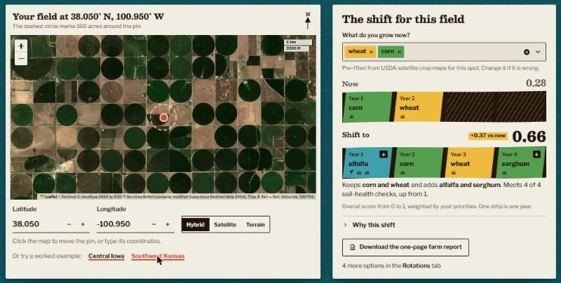
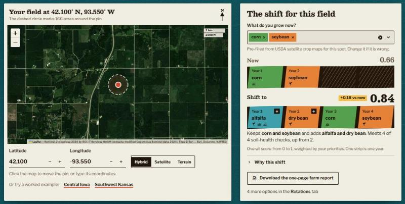
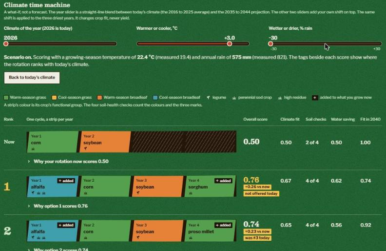
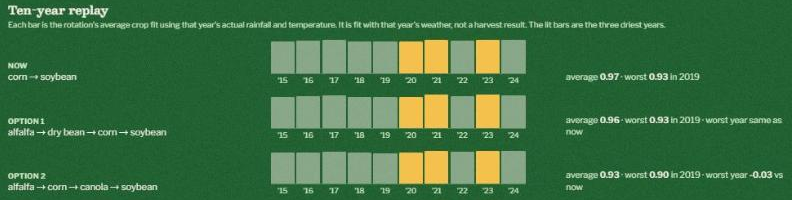
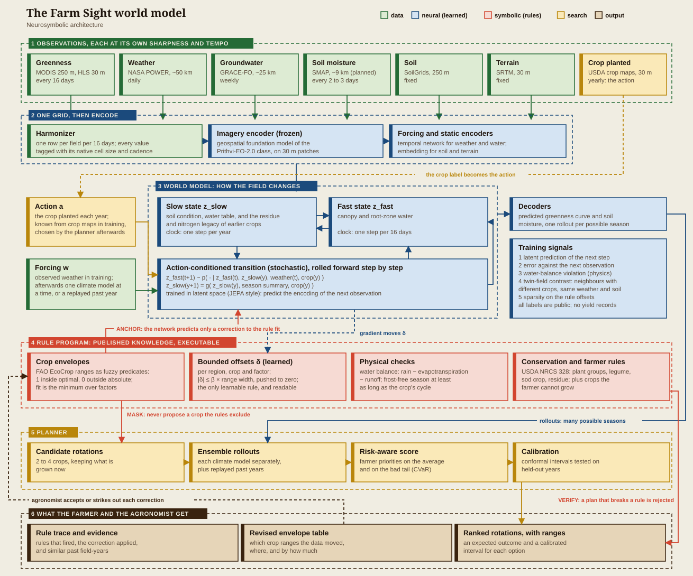

A crop-rotation advisor that reads any field from orbit, ranks the rotations that fit it, and shows the reason for every score.

Choosing what to plant next is a climate decision made without the climate record.
Farm Sight closes that gap with one click, and keeps the farmer in charge of the answer.
Already measured for every field, free and open
Pin the fieldClick the map. Nothing else to enter.
NASA fills in the fieldTen years of weather, groundwater, greenness, slope, soil, the 2040 projection, and the crops satellites saw growing there.
Say what mattersClimate fit, soil health, water saving, and any crop you cannot grow.
Get the shiftYour rotation scored against better ones that keep what you already grow.




sharvin-coder-nasa-space-apps-field-shift-app-265jl1.streamlit.appgithub.com/Sharvin-coder/nasa-space-apps-field-shift